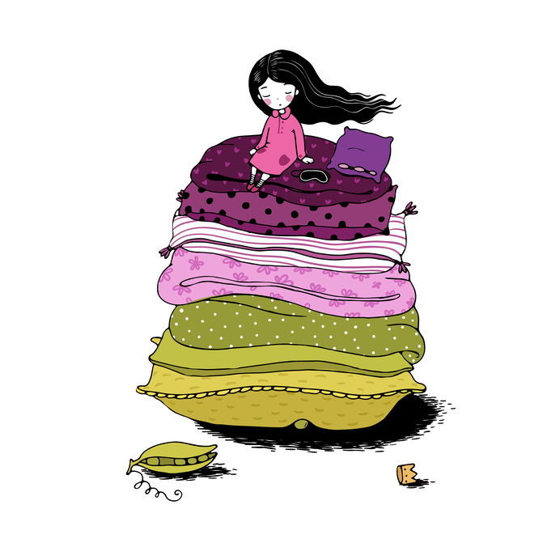

Prințesa și bobul de mazăre
H.C. Andersen
Era odată un prinţ şi prinţul acela voia să se însoare cu o prinţesă, dar cu o prinţesă adevărată. Şi a cutreierat toată lumea ca să
găsească una pe placul lui şi tot n-a găsit. Prinţese erau destule, dar el nu putea să ştie dacă erau cu adevărat prinţese, fiindcă
tuturora le lipsea câte ceva. Şi prinţul s-a întors iar acasă şi era foarte necăjit, pentru că tare ar fi vrut să găsească o prinţesă
adevărată. Într-o seară, tocmai se stârnise o furtună cumplită, tuna şi fulgera şi ploua cu găleata; era o vreme îngrozitoare. Deodată
s-a auzit cum bate cineva la poarta oraşului şi regele, tatăl prinţului, s-a dus să deschidă. La poartă era o prinţesă. Vai, dar în ce
hal era din pricina ploii şi a vremii rele! Apa îi curgea şiroaie pe păr şi pe haine şi îi intra în pantofi pe la vârfuri şi ţâşnea
înapoi pe la călcâie. Dar zicea că-i prinţesă adevărată.
– Bine, las’ că vedem noi îndată! s-a gândit regina, dar n-a spus nimic; s-a dus în odaia de culcare, a luat toate saltelele din pat şi
pus pe scândurile patului o boabă de mazăre. Pe urmă a pus peste mazăre douăzeci de saltele de lână şi pe saltele douăzeci de perne mari
de puf.
Aici s-a culcat prinţesa. Dimineaţa au întrebat-o cum a dormit.
– Groaznic de prost! a răspuns prinţesa. Toată noaptea n-am închis ochii. Dumnezeu ştie ce a fost în pat! Am şezut pe ceva tare şi
acuma-s toată numai vânătăi! Groaznic!
Şi atunci au văzut cu toţii că era o prinţesă adevărată, dacă a simţit ea o boabă de mazăre prin douăzeci de saltele şi douăzeci de
perne de puf. Aşa de gingaşă la piele nu putea să fie decât numai o prinţesă! Şi prinţul a luat-o de nevastă, fiindcă acum ştia hotărât
că asta-i prinţesă adevărată; iar boaba de mazăre au pus-o în odaia unde erau bijuteriile coroanei. Și se mai poate vedea acolo şi astăzi
dacă n-o fi luat-o careva.
Povestea

Pagina principală